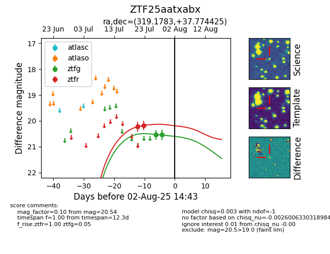

Target ZTF25aatxabx at 2025-08-02 14:43, see:
FINK: fink-portal.org/ZTF25aatxabx
Lasair: lasair-ztf.lsst.ac.uk/objects/ZTF25aatxabx
ALeRCE: alerce.online/object/ZTF25aatxabx
alt names
ZTF25aatxabx (ztf,fink)
coordinates:
equatorial (ra, dec) = (319.1783,+37.77443)
galactic (l, b) = (82.9185,-7.89372)
photometry
last ztfg=20.54, ztfr=20.17
2 ztfg, 2 ztfr detections
